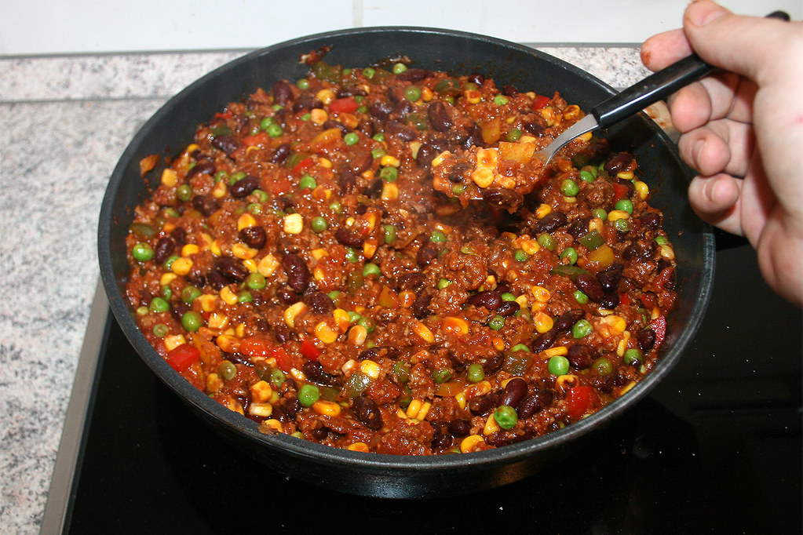

Chili con Carne

Description
Chili con carne is a hearty stew built around tender beef simmered with tomatoes, onions, garlic,
and a blend of warm spices like cumin and chili powder. Beans are sometimes added depending on the regional style,
but the core is the slow-cooked mix of meat and spices that develops a deep, rich flavor. The result is a thick,
comforting dish that balances heat, savoriness, and a little acidity, perfect on its own or served over rice,
potatoes, or cornbread.
Ingredients
Base
- 1–2 tablespoons oil
- 1 large onion, diced
- 3–4 cloves garlic, minced
Meat
- 1–1.5 pounds (450–700 g) ground beef or diced beef
Spices
- 2–3 tablespoons chili powder
- 1 tablespoon ground cumin
- 1 teaspoon smoked paprika
- 1 teaspoon oregano
- Salt and pepper to taste
- Optional: cayenne or chipotle powder for extra heat
Liquids and Tomatoes
- 1 can (14–15 oz / 400 g) crushed or diced tomatoes
- 1–2 tablespoons tomato paste
- 1–2 cups beef broth
Beans
- 1 can kidney beans or pinto beans, drained and rinsed (optional, depending on your style)
Optional add-ons
- 1 diced bell pepper
- 1 small jalapeño or serrano, chopped
- A splash of beer for depth
- A pinch of sugar if the tomatoes are sharp
Home